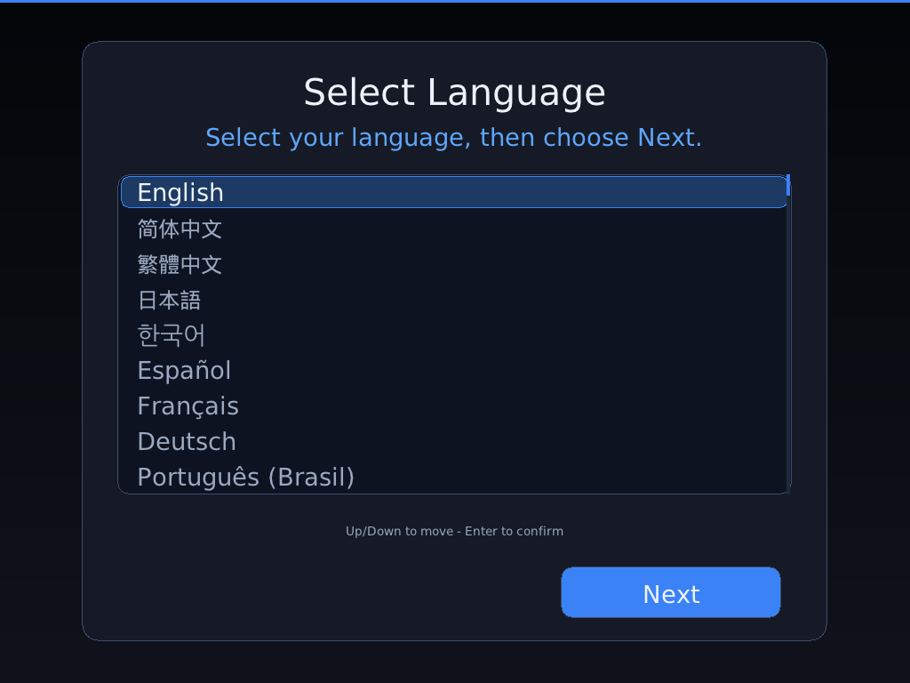
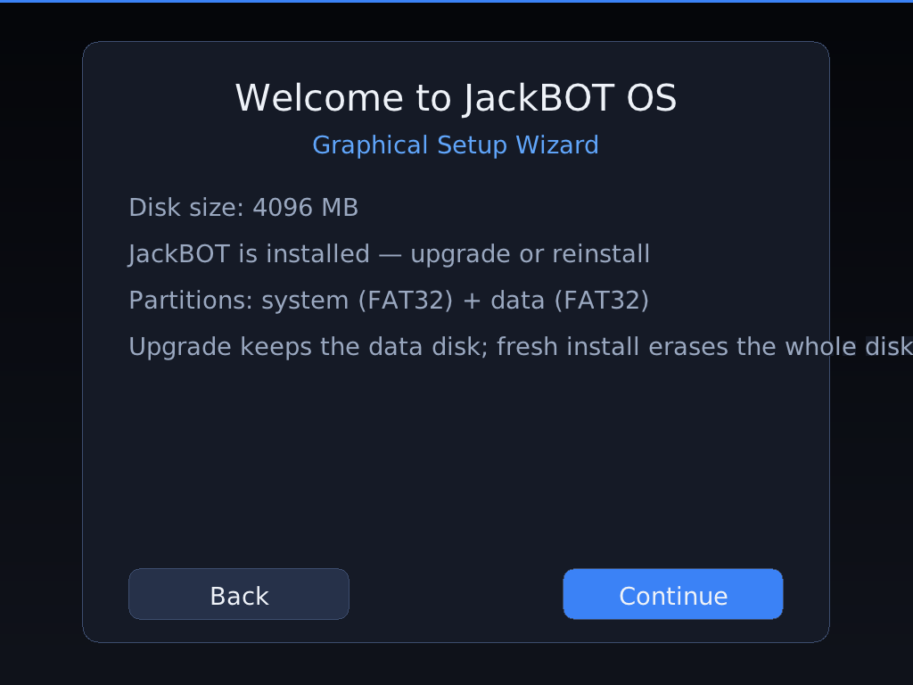
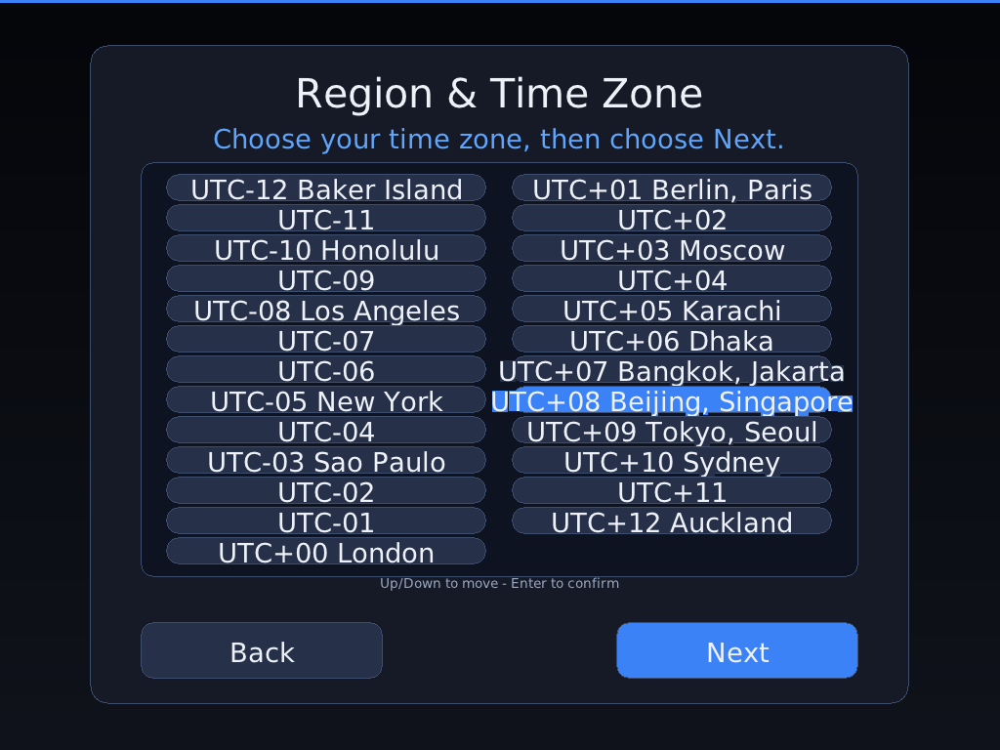
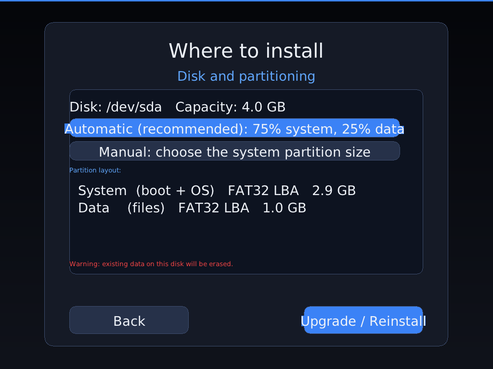
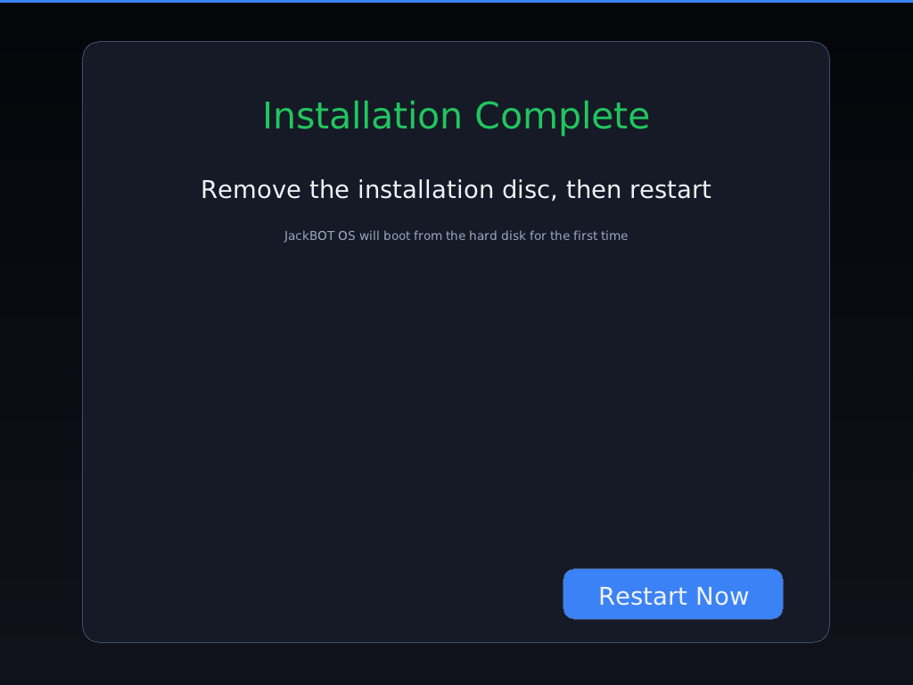
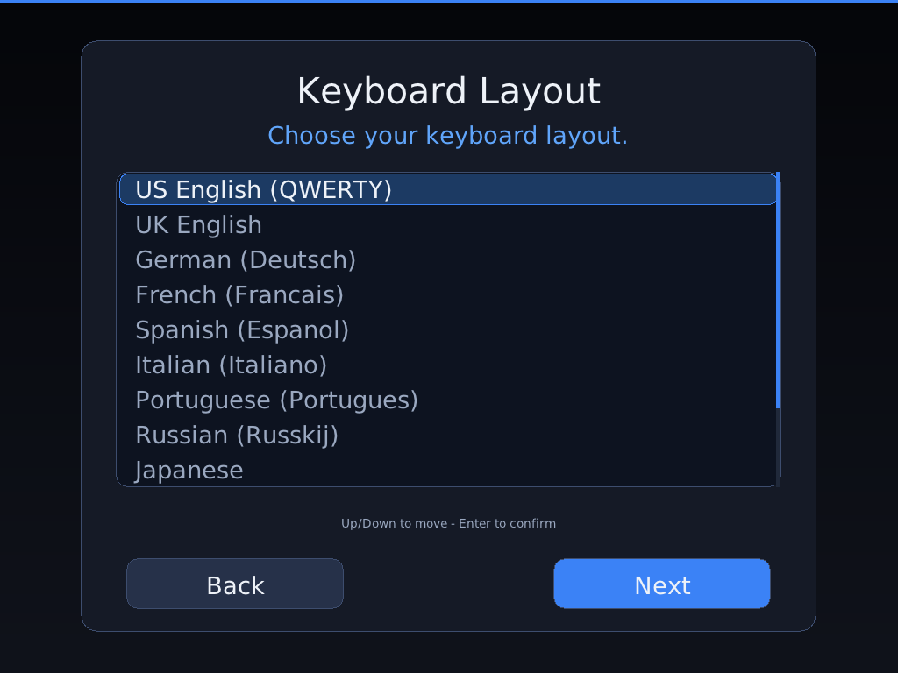
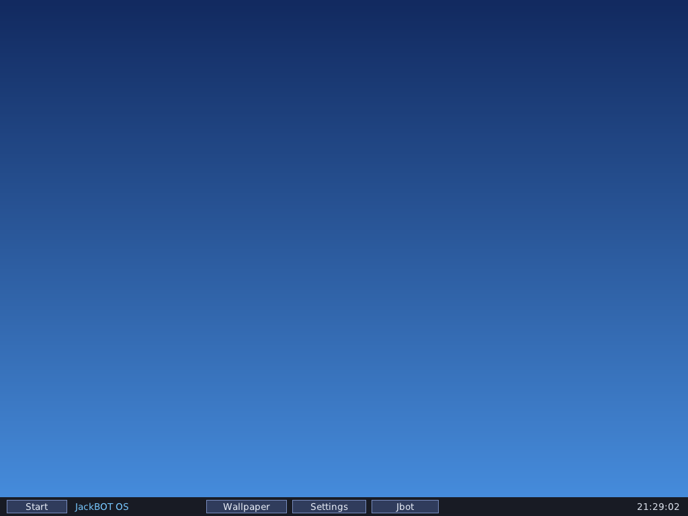

JackBOT OS
A from-scratch, 64-bit hobby operating system written in C and NASM. Multiboot2 + GRUB, a native graphical installer, a 205-language setup experience, and a GPU-composited hardware cursor — no Linux kernel underneath.
About
JackBOT OS (Jack Broad Omnibus Technique Operating System) is an independent operating
system built for learning and hands-on OS engineering. It boots through GRUB using the
Multiboot2 protocol, runs a self-written 64-bit kernel (GDT/IDT, paging, scheduler, system
calls, user-space isolation), and ships its own graphical stack, file system drivers and
applications — it is not a Linux distribution.
The v1.0.0 release introduces a bootable Live Desktop mode (try the full desktop
without installing), five new system-management applications (USB Devices,
Battery & Power, Recycle Bin, File Explorer and Device Manager), and real
hardware enumeration: ACPI table/PM1-control-block parsing, USB host-controller
and root-hub port reading, and a live PCI device tree. It also builds on the
complete graphical installer (language → welcome → time zone → disk
partitioning → install), a first-boot OOBE wizard, real TrueType
anti-aliased text, full-screen adaptive layout, and a VMware SVGA II /
VirtualBox VMSVGA driver that hands the scanout to the virtual GPU and composites
the pointer in hardware, so there are no drag trails.
Important: Please test in a virtual machine (Oracle VirtualBox is the
recommended and most-tested target) before any physical-hardware use.
Key Features in v1.0.0
Graphical Installer
A native, mouse-driven wizard: language selection, disk detection, time zone/region, automatic or custom partitioning, FAT32 formatting and GRUB install to disk.
205 Languages & Real TTF
The very first installer screen lets you pick among 205 languages with native names, rendered by real TrueType fonts (Latin, CJK, Korean, Arabic, Thai and Devanagari fallbacks), falling back to English where a translation is missing.
First-Boot OOBE
After installation a first-run wizard sets display language, keyboard layout and time zone/region, and persists the choices to the on-disk JBOT.CFG configuration.
GPU Scanout & Hardware Cursor
A VMware SVGA II / VMSVGA driver negotiates native mode, maps the command FIFO and composites the pointer via DEFINE_ALPHA_CURSOR / MOVE_CURSOR — the GPU, not the framebuffer, draws the cursor.
Adaptive Full-Screen Desktop
The UI rescales to the actual resolution instead of drawing at a fixed small size, with a tiled window manager, taskbar and built-in applications.
Disk & Persistence
ATA/IDE LBA48 PIO, an MBR partitioner (up to four primary partitions), a FAT32 writer/reader and shutdown persistence of configuration and user files.
JCA Programs & Tooling
Run .jca programs compiled by the bundled JCA compiler, automate with .xjh batch scripts, and use the built-in micro-Python console and dozens of desktop apps.
Networking & Hardware Layer
A PCI layer with IRQ registration, e1000/RTL-8139 NIC drivers, ARP/ICMP/DHCP/DNS/TCP/HTTP and an expanded hardware-compatibility database.
Live Desktop & System Apps
Boot the ISO straight into the full desktop without installing, and manage the machine with USB Devices, Battery & Power (ACPI), Recycle Bin, File Explorer and Device Manager.
Real Hardware Enumeration
ACPI RSDP/FADT parsing with the PM1 power-control block, USB UHCI/OHCI/EHCI/xHCI host-controller and root-hub port detection, and a live PCI device tree with vendor/device IDs and IRQs.
Screenshots (VirtualBox, VMSVGA)







Download
JackBOT OS v1.0.0
Image file name: JackBOT-1.0.0.iso
64-bit hybrid ISO (BIOS + UEFI). Recommended VM: Oracle VirtualBox, 2048 MB RAM, VMSVGA graphics, PS/2 mouse.
Size: 22.54 MB · Verify with SHA-256:
ee765a660020ff8ea26023e3126efe09eee1c8c6b8f722ed9a39bbfce3fa720e
Changelog v1.0.0
- v1.0.0 — real networked browser (verified in VirtualBox): the e1000/82540EM driver now brings the link up (DHCP bound), the TCP stack loads pages over plain HTTP, and JBrowser renders real HTTP 200 pages with relative-URL navigation and automatic 302-redirect following. Keyboard-only browsing is supported (Ctrl+L focuses the address bar). HTTPS/TLS is not implemented yet.
- v1.0.0 — AC97 audio and boot chime: an Intel AC97/STAC9700 driver plays a PCM boot sound through the VirtualBox sound card.
- v1.0.0 — voice assistant and Bluetooth/LED panels: Jbot Voice (mic-level UI) and a Bluetooth & Lamps control panel (adapter detection, color/brightness lamp UI). These are interface/control skeletons: on-device speech-to-text and the full L2CAP/GATT pairing stack are clearly marked as next-stage work.
- v1.0.0 — new Live Desktop boot mode: select "Try JackBOT OS 1.0 (Live Desktop)" in GRUB to boot the full desktop with no disk and no install.
- v1.0.0 — five new system-management apps: USB Devices, Battery & Power (ACPI), Recycle Bin, File Explorer and Device Manager.
- v1.0.0 — real hardware enumeration, verified in VirtualBox: ACPI RSDP/FADT parsing (PM1 control block, AC-adapter detection), USB host-controller and root-hub port enumeration (OHCI/UHCI/EHCI/xHCI), and a PCI device tree showing vendor/device IDs, BDF and IRQs.
- v1.0.0 — FAT32 directory listing and file move backing the Recycle Bin (\RECYCLED) and File Explorer (delete, restore, empty).
- New native graphical installer: language, welcome, time-zone/region, automatic or custom disk partitioning, progress and completion pages.
- Setup language list expanded to 205 languages with native names and English fallback; real TrueType fonts (Latin/CJK/Korean/Arabic/Thai/Devanagari).
- First-boot OOBE wizard (language, keyboard layout, time zone), persisted to JBOT.CFG.
- VMware SVGA II / VMSVGA native-mode driver: GPU scanout take-over and GPU-composited hardware cursor (no drag trails).
- Full-screen adaptive layout that scales to the real resolution, replacing the earlier fixed-size small UI.
- Installer now copies every fallback TTF to the installed system so CJK/Korean/Arabic/Thai/Devanagari render after first boot.
- Expanded PCI hardware-compatibility database and a generic PCI/IRQ driver framework.
- Official CPython 3.12 source tree added with an explicit porting-layer skeleton and gap list.
- MBR partitioner, FAT32 formatter, ATA LBA48 driver and GRUB-to-disk install verified end to end in VirtualBox.